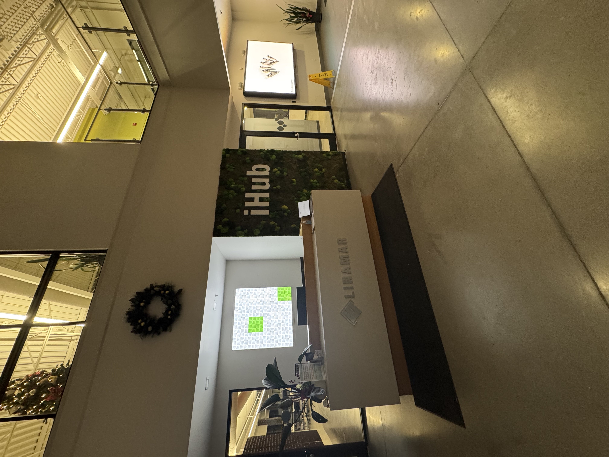
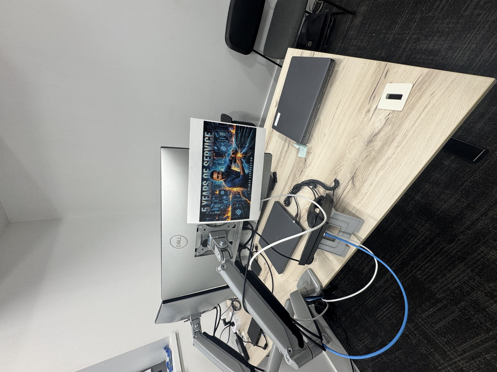
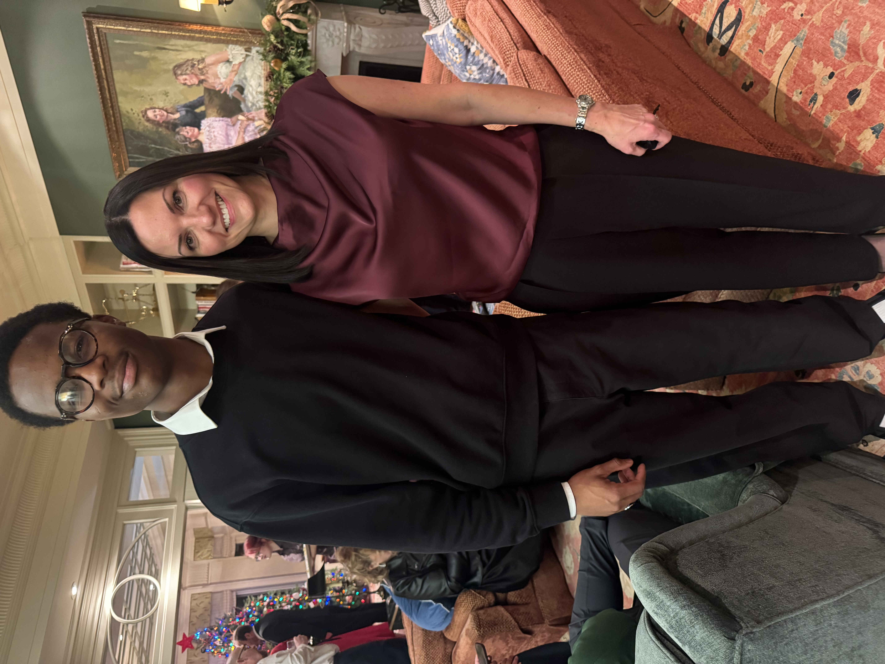

Olukorede Olutayo — Co-op Work Term Report
Work Term 1 — Topron Consulting Inc.
IT Intern • Remote • May 12 – Aug 8, 2025
Topron Consulting Inc. is a consulting and education-focused IT firm based in Mississauga, ON. The company provides IT support, training, and solutions to help organizations stay innovative and efficient. My work was fully remote, but I collaborated daily with my supervisor, Babs Atafo, and the IT team.
- Location: Mississauga, ON (Remote)
- Area: IT consulting, support, and education
- Tools: ServiceNow, internal platforms
Goals & Reflections
Goal 1: Communication
Improve clarity and confidence in presenting technical ideas.
Reflection: By preparing updates for weekly meetings and seeking feedback, I became more comfortable explaining technical topics to non-technical peers. I co-presented in team discussions, which improved my confidence.
Goal 2: Creativity
Contribute fresh ideas to team workflows and problem-solving.
Reflection: I proposed ideas for streamlining ticket categorization and documenting solutions. These suggestions were well received, helping me practice creative problem-solving in a real workplace.
Goal 3: Teamwork
Collaborate effectively and support shared goals.
Reflection: I contributed meaningfully to group tasks, asked questions during meetings, and offered support to teammates. Feedback confirmed my reliability and willingness to collaborate.
Goal 4: Global Understanding
Recognize and adapt to diverse perspectives in the workplace.
Reflection: By engaging with colleagues from different backgrounds, I gained a deeper understanding of cultural differences and improved my ability to communicate respectfully and inclusively.
Goal 5: Technological Literacy
Gain confidence with new technologies and tools.
Reflection: I learned to navigate ServiceNow efficiently, assisted in website maintenance, and adapted quickly to troubleshooting tasks. This boosted my independence and technical confidence.
Job Description
As an IT Intern, I was responsible for responding to tickets, troubleshooting basic software, hardware, and networking issues, and escalating when necessary. I also supported website maintenance, system integration, and process documentation. This role required strong communication, adaptability, and technical problem-solving skills.
Tools I worked with included ServiceNow, internal IT platforms, and common office technologies. Some skills I had from coursework, but much of my knowledge came from hands-on learning in the workplace.
Conclusions
This co-op term strengthened both my technical and soft skills. I learned to resolve IT tickets quickly, improved my teamwork and communication, and gained confidence using new technologies. I am confident that with all I have learned during this current work term, I will able to thrive an excel in the next and further work terms to come.
Next Steps??
I aim to continue building expertise in IT support and enterprise technologies, while pursuing opportunities to expand into networking and cybersecurity in future roles with a little bit of marketing and design on the side.
Work Term 2 — Linamar Corporation
Desktop & Systems Support Technician (Co-op) • Guelph, ON • Fall 2025
Linamar Corporation is a Canadian-founded global manufacturer recognized for advanced engineering and innovative product development across diverse industries. Headquartered in Guelph, Ontario, Linamar operates internationally and delivers precision manufacturing solutions across automotive, industrial, and emerging technology sectors.
During my co-op term, I worked at Linamar’s corporate office in Guelph, Ontario, supporting day-to-day IT operations for employees across the facility in a fast-paced and professional environment.
Job Description
My role at Linamar was Desktop and Systems Support Technician (Co-op). Reporting to the IT Manager, I supported the maintenance, configuration, and troubleshooting of desktop systems, laptops, and peripherals for end-users across the corporate office.
I served as a first point of contact for IT issues, acting as the face of IT within the facility. Incidents and service requests were tracked and managed through ServiceNow, ensuring accurate documentation, prioritization, and resolution in line with service-level agreements (SLAs).
- Managed and resolved IT tickets using ServiceNow while meeting SLA requirements.
- Worked extensively with Microsoft Entra and Active Directory to manage user access.
- Monitored SentinelOne antivirus reports daily and ensured endpoint compliance.
- Configured and deployed new desktops and laptops for employees.
- Provided on-site support for hardware, software, and connectivity issues.
- Ensured meeting rooms and collaboration spaces were fully operational prior to use.
Supervisor & Team Experience
I worked closely with my supervisor, Martin Alksho, who provided valuable guidance and firsthand insight into effective troubleshooting and professional user support. His mentorship helped me develop a structured, user-focused approach to resolving technical issues.
Working at Linamar was a meaningful experience that I will remember for a long time. The IT team fostered a welcoming and collaborative environment, consistently making me feel supported and included as part of the team.
Goals & Reflections
Goal 1: Communication
Improve my oral communication by clearly and confidently sharing ideas and technical information in a professional environment.
Reflection: I became more comfortable contributing during meetings, asking clarifying questions, and adapting my communication style to different audiences.
Goal 2: Problem Solving
Strengthen my problem-solving skills by analyzing issues, identifying root causes, and developing practical solutions.
Reflection: I improved my technical confidence and applied structured approaches to troubleshooting hardware and software issues.
Goal 3: Professional & Ethical Behaviour
Enhance my professionalism through effective time management, task prioritization, and organization in a fast-paced support environment.
Reflection: I became more organized, balanced multiple responsibilities effectively, and reinforced ethical practices such as confidentiality.
Goal 4: Information Literacy
Strengthen my ability to locate, evaluate, and apply reliable technical information to resolve IT issues efficiently.
Reflection: I became more efficient using documentation and trusted resources to resolve IT issues and make informed decisions.
Goal 5: Global Understanding
Broaden my understanding of how IT concepts connect to broader organizational contexts.
Reflection: I developed a more thoughtful and analytical approach to problem-solving by considering alternative perspectives.
Conclusion
This co-op work term at Linamar Corporation was a valuable and formative experience that strengthened both my technical and professional skill sets. I developed stronger communication skills, improved my problem-solving approach, and learned how to manage responsibilities effectively in a fast-paced IT environment.
Overall, this experience enhanced my confidence in applying classroom knowledge to real-world scenarios and provided a strong foundation for future co-op terms and my professional career.
Acknowledgements
I would like to express my sincere appreciation to the IT team at Linamar Corporation for their guidance, support, and collaboration throughout my co-op work term. From the beginning, the team fostered a welcoming and inclusive environment that made me feel valued and supported.
Working at Linamar was a meaningful experience that I will remember for a long time, and I am grateful for the opportunity to learn from professionals who consistently demonstrated teamwork, mentorship, and a strong commitment to excellence.
Photos






Work Term 3 — RWDI
Service Desk Support • Guelph,ON • Summer 2026
Rowan Williams Davies & Irwin Inc. (RWDI) is a global environmental engineering consulting firm specializing in the science of buildings and structures, with more than 700 professionals across nine countries delivering integrated solutions in sustainability, wind engineering, microclimate, acoustics, and vibration.
I worked out of RWDI's Guelph, Ontario office as part of the IT Service Desk team, supporting infrastructure and end-user systems for engineering staff working with large-scale project and simulation data.
Job Description
My role at RWDI was IT Service Desk Support Co-op. I served as a primary point of contact for resolving end-user incidents and service requests, while also taking on a variety of technical responsibilities. This included working with company servers, managing project folder structures, and administering access permissions for confidential job files. These responsibilities gave me valuable hands-on experience with both day-to-day IT support and the technical systems that help support the organization.
Beyond day-to-day ticket resolution, I worked on automating recurring workflows to reduce manual effort across the IT team, and applied my understanding of Active Directory and Group Policy Objects to manage user accounts and permissions at scale across the organization.
- Provided Level 1 phone, email, and walk-in support, acting as the single point of contact for end-user incidents and service requests.
- Managed data on company servers, including organizing and maintaining project folder structures for active engineering jobs.
- Administered and audited access permissions to confidential project files in line with client and data-security requirements.
- Automated repetitive IT workflows and tasks to improve team efficiency and reduce manual processing time.
- Managed user accounts and permissions using Active Directory and Group Policy Objects (GPOs).
- Configured, installed, maintained, and troubleshot desktop hardware and software issues across Windows OS and Microsoft Office environments.
- Supported basic networking, cabling, and LAN troubleshooting as part of broader infrastructure support.
Supervisor & Team Experience
I worked closely with my supervisor, Ari Milne, who consistently served as a valuable resource and source of support throughout my role. I also worked alongside the rest of the team, which allowed me to gain hands-on experience with a variety of tools and systems. From helping troubleshoot different technical issues to assisting with server maintenance, I was able to expand my technical knowledge and gain a better understanding of the day-to-day responsibilities involved in IT support.
Working with the IT team at RWDI was an amazing experience. From the beginning, I felt welcomed and supported by everyone on the team. I was given opportunities to learn from different departments, take on new challenges, and grow both personally and professionally. The support and encouragement I received throughout my time there made the experience truly meaningful, and it is one that I will not forget.
Goals & Reflections
Goal 1: Communication
Improve oral communication skills in an official environment.
Reflection: Throughout my work term, I had regular opportunities to communicate with users and members of the IT team while providing technical support. This helped me become more comfortable explaining technical issues, asking clarifying questions, and adapting my communication style to different users. Overall, I developed greater confidence in communicating effectively in a professional environment.
Goal 2: Critical & Creative Thinking — Problem Solving
Develop problem-solving skills by independently troubleshooting and resolving technical issues.
Reflection: Throughout my work term, I encountered a variety of technical issues that required me to analyze the problem and determine an appropriate solution. By using troubleshooting resources, researching issues, and consulting with experienced team members when necessary, I became more confident in approaching problems independently. This experience strengthened my critical thinking and helped me develop a more structured approach to technical troubleshooting.
Goal 3: Professional & Ethical Behaviour — Teamwork
Develop effective teamwork skills by collaborating with colleagues in a professional environment.
Reflection: Throughout my work term, I regularly collaborated with other members of the IT team to address technical issues and complete daily responsibilities. Working with others allowed me to learn from more experienced team members while also contributing my own knowledge and skills. I became more comfortable asking for assistance, sharing information, and working as part of a team to resolve issues efficiently.
Goal 4: Professional & Ethical Behaviour — Personal Organization/Time Management
Improve personal organization and time management skills in a professional environment.
Reflection: Throughout my work term, I developed stronger organizational and time management skills by managing multiple support requests and responsibilities throughout the day. I learned to prioritize tasks based on urgency and importance while ensuring that other responsibilities were not overlooked. This helped me become more efficient and confident in managing my workload independently.
Conclusion
This co-op work term at RWDI was a valuable experience that strengthened both my technical and professional skills. I gained hands-on experience resolving a variety of IT issues while also exploring different areas of IT that I had not previously worked with. The experience helped me become more confident in my technical abilities and better prepared me to take on new challenges in future roles.Overall, I am very grateful for the knowledge, experience, and support I received from the RWDI IT team. The welcoming environment they created made my work term a memorable experience and provided a strong foundation for my future co-op terms and professional career.
[1–2 sentences on how this experience prepares you for future terms or your career.]
Acknowledgements
I would like to express my sincere appreciation to [team/department name] at RWDI for their guidance, support, and collaboration throughout my co-op work term. [1 sentence on how they made you feel welcomed/supported.]
[1–2 sentences of closing thanks — mention anyone specific you'd like to acknowledge by name.]
Photos
.jpeg)
.jpeg)
.jpeg)
.jpeg)
.jpeg)